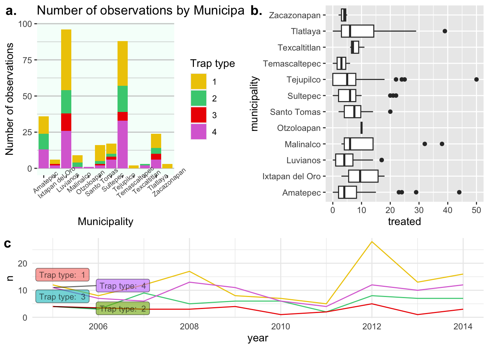
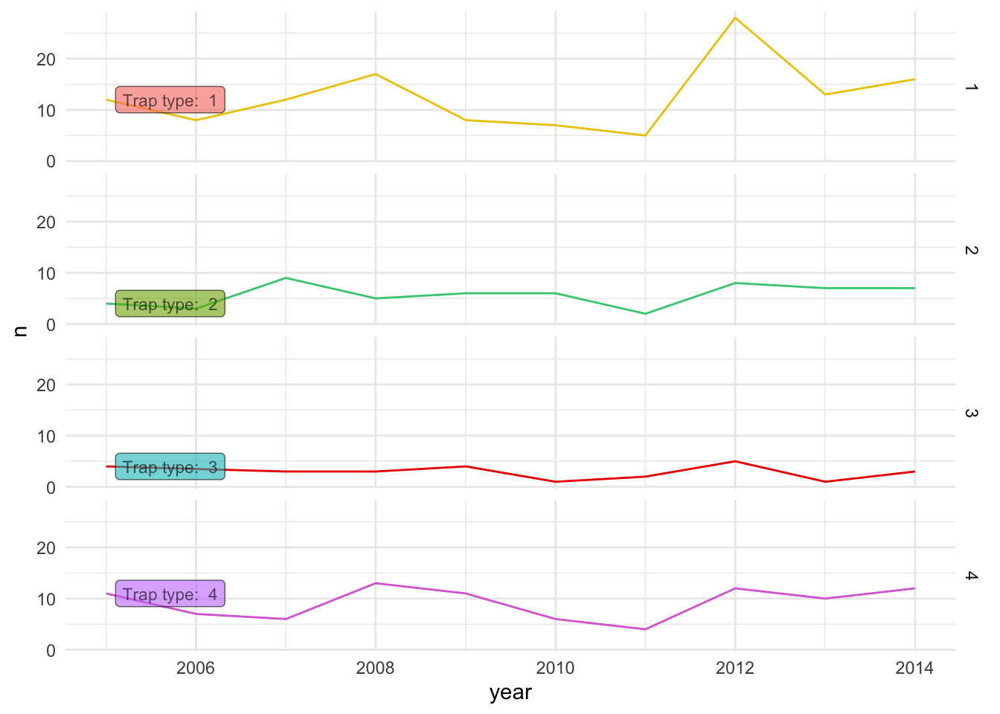
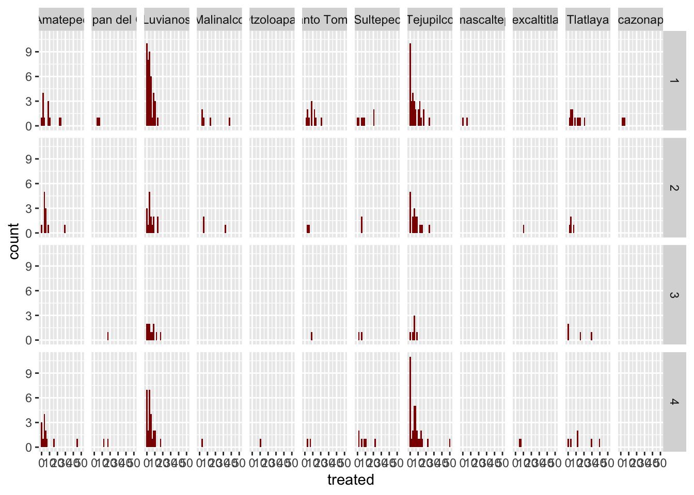

Arranjos de figuras
Pablo Gomez
2023-07-05
1 Organizando os gráficos em um layout
Agora que temos todas as figuras em uma lista, podemos fazer arranjos
com nossas figuras. Para isso, usamos a função ggarrange()
da biblioteca ggpubr. A função ggarrange()
recebe vários argumentos, mas o principal são as figuras que queremos
organizar. Podemos especificar as figuras de duas maneiras, definindo
uma lista com todas as nossas figuras, ou se quisermos figuras
específicas, podemos defini-las uma por uma. Por exemplo:
library(ggpubr) # lcarrega a biblioteca
ggarrange(plotlist = figures)Essa pode não ser a melhor disposição para as figuras, pois é muita
informação, então podemos organizá-las em várias ‘páginas’. A maneira
como ggarrange() organiza as figuras é em uma grade n x
n. Se não for especificado, ele tentará organizar todas as figuras em
uma única grade, mas podemos usar os argumentos ncol e
nrow para limitar o número de elementos por célula em nossa
grade. Por exemplo:
ggarrange(plotlist = figures, ncol = 2, nrow = 1)## $`1`
##
## $`2`
##
## $`3`
##
## attr(,"class")
## [1] "list" "ggarrange"Se quisermos selecionar figuras específicas, precisaremos selecioná-las da lista ou adicioná-las uma por uma. Também podemos adicionar rótulos para posterior referência na legenda da figura, por exemplo:
toppanel <- ggarrange(
figures$bars, figures$box, # Essas são nossas figuras
labels = c('a.', 'b.') # Os rótulos
)
toppanelTambém podemos fazer arranjos com arranjos, por exemplo:
p1 <- ggarrange(toppanel, figures$timeseries, ncol = 1, heights = c(2, 1), labels = c('','c')) # Adicionar outra figura na parte inferior
p1
Finalmente, podemos adicionar um título geral para o arranjo:
p1 %>%
annotate_figure(top = text_grob('Resumo dos resultados', face = 'bold', size = 20))Observe que a especificação do texto usa a função
text_grob(), que é semelhante à maneira como especificamos
texto para os temas no ggplot.
2 Facetas
As facetas são uma maneira de estratificar os dados com base em
variáveis do conjunto de dados. Você pode pensar nisso de maneira
semelhante ao uso de grupos. Para criar um gráfico estratificado,
podemos usar a função facet_grid(), que solicitará uma
variável para ser colocada nas linhas e outra nas colunas:
figures$timeseries +
facet_grid(rows = vars(trap_type))
figures$histogram <- captures %>% # Os dados que vamos usar
ggplot() +
geom_histogram(aes(treated), fill = 'red4') + # Vamos criar um histograma da variável tratados
facet_grid(
rows = vars(trap_type), # Usaremos a variável Tipo de armadilha para as linhas
cols = vars(municipality) # E a variável município nas colunas
)
figures$histogram
3 Exercício
Agora que você conhece algumas ferramentas para buscar informações, você terá que fazer seus próprios gráficos. Se você quiser fazer gráficos com os conjuntos de dados que temos usado, pode fazer isso, ou pode usar qualquer código online para replicá-los.
- Acesse o site Data to Viz.
- Identifique alguns gráficos que você gostaria de fazer (você também pode fazer gráficos que já fizemos anteriormente nos exercícios).
- Certifique-se de rotular seus gráficos!
- Experimente alterar as cores, variáveis, temas etc.
- Reproduza alguns gráficos e organize-os em um arranjo.
Ao final, teremos uma discussão em que você poderá compartilhar seus gráficos e solucionar quaisquer problemas que possa ter tido.